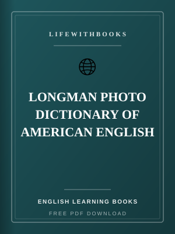
LONGMAN PHOTO DICTIONARY OF AMERICAN ENGLISH
Over 2,500 American English words taught through vivid, real-life photographs organized into themati
Read MoreEnglish learning books available to browse for free — courses, grammar, conversation practice and study guides.

Over 2,500 American English words taught through vivid, real-life photographs organized into themati
Read MoreA six-level communicative English course from Cambridge designed for real-world international commun
Read MoreA focused workbook that systematically teaches English prepositions through clear rules, hundreds of
Read MoreA multi-level course building the specialised English vocabulary and communication skills needed in
Read MoreA practical phrase book containing ready-to-use expressions for every stage of an English-language b
Read MoreOver 3,000 idiomatic expressions and conversational patterns used in everyday American English, orga
Read More100 two-page units of upper-intermediate vocabulary from Cambridge, with clear explanations on the l
Read MoreMichael Swan's authoritative A–Z reference covering over 600 points of English grammar, vocabulary a
Read MoreStructured daily conversation material for learners who can read and write English but struggle to s
Read MoreA clear academic introduction to the sound system of English: vowels, consonants, stress, rhythm, in
Read MoreA motivational and practical method for shy or stuck learners who want to finally break through and
Read More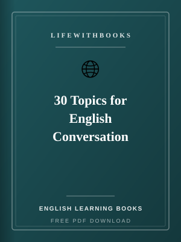
Thirty ready-to-use everyday conversation topics with warm-up questions, key vocabulary, sample answ
Read MoreThe 1,500 highest-frequency English words for everyday conversation, organized by topic with definit
Read MoreA no-nonsense guide to effective English study habits, input choices and practice routines for learn
Read More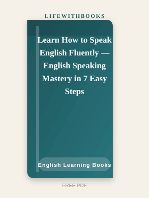
A seven-step method that takes intermediate English learners from hesitant speech to fluent, confide
Read More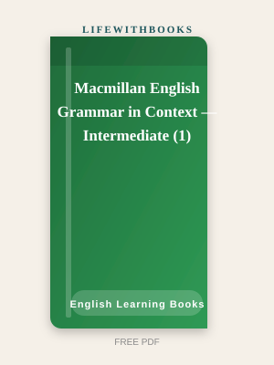
Intermediate English grammar taught through engaging real-world contexts including science, history,
Read MoreThe companion workbook to Betty Azar's classic grammar series, providing extensive independent pract
Read MorePractical, functional English for real daily situations — at the supermarket, the airport, the bank,
Read More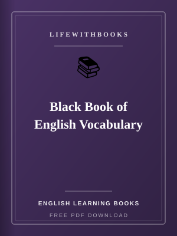
A high-yield vocabulary guide targeting the most frequently tested words in competitive English exam
Read More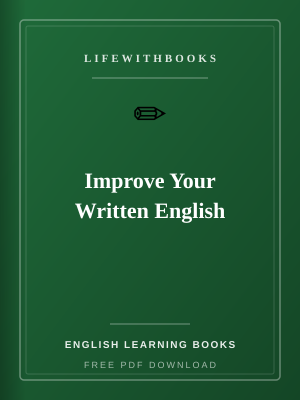
A friendly, jargon-free guide to mastering grammar, punctuation, spelling and style for confident, c
Read More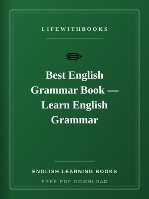
A comprehensive, learner-friendly English grammar course covering all major topics from tenses and a
Read More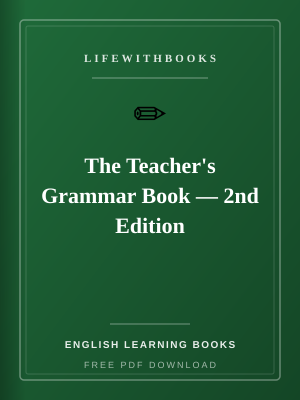
James D. Williams' comprehensive introduction to English grammar for language teachers, blending tra
Read More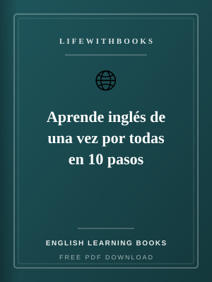
A ten-step plan written in Spanish for Spanish speakers who have studied English for years without r
Read More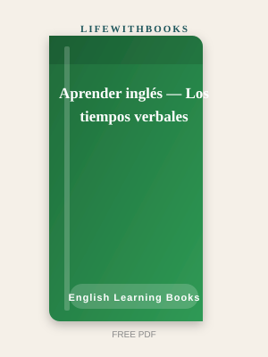
A focused grammar guide helping Spanish speakers master the English tense system by comparing it dir
Read More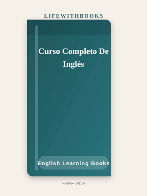
A complete, structured English course written entirely in Spanish, taking learners from beginner thr
Read More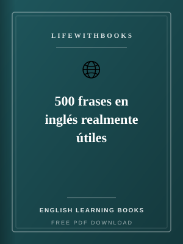
500 genuinely useful English phrases with Spanish translations, organized by everyday situations for
Read More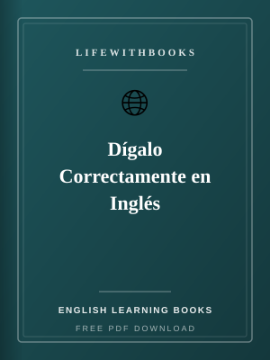
A targeted guide for Spanish speakers focusing on the specific English errors caused by interference
Read More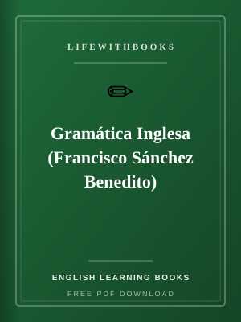
One of the most widely used Spanish-language reference grammars of English, providing comprehensive
Read More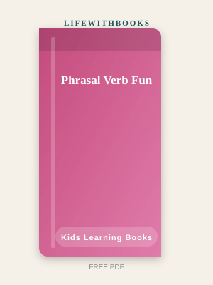
A playful activity book introducing children to common English phrasal verbs through cartoons, stori
Read More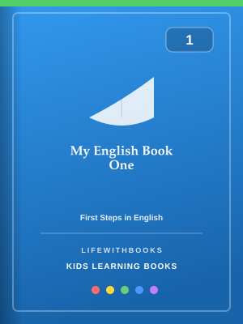
A first English coursebook for young learners aged 5–7, introducing the alphabet, basic vocabulary a
Read More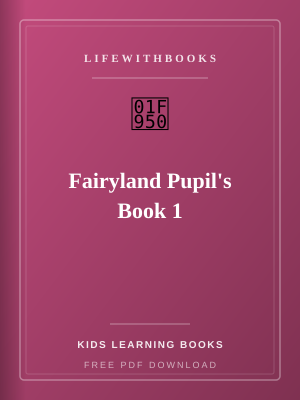
The first level of the popular Fairyland English series for very young learners, using fairy-tale ch
Read More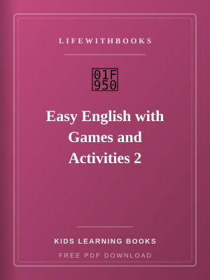
Level-two English vocabulary and grammar practice through engaging games, puzzles and activities for
Read More
First-level English practice through games, puzzles, colouring and simple speaking activities for ab
Read More
Original LifeWithBooks guide to IELTS Academic format, scoring bands, and how to prepare with practi
Read More
Modern Standard Arabic basics for Quran and daily phrases — alphabet, grammar and study plan.
Read More
Cambridge O Level English Language skills — reading, writing, summary and directed writing.
Read More